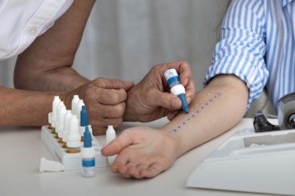
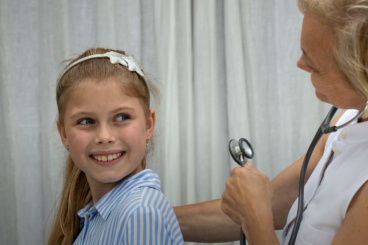

Astma
Astma er en af de mest udbredte kroniske sygdomme hos børn og unge. Det er en inflammatorisk sygdom i luftvejene, der medfører tilbagevendende episoder med åndenød, hvæsen, trykken for brystet og hoste.
På Børne & Allergiklinikken foretager vi en grundig udredning af dit barns luftveje og symptomer. Vi tester for allergisk og ikke-allergisk astma og hjælper med at finde den rette behandling og inhalationsteknik, så dit barn kan leve et aktivt hverdagsliv.
Vi hjælper med:
- Allergisk astma (udløst af pollen, støvmider, kæledyr)
- Anstrengelsesudløst astma
- Natlig hoste og åndenød
- Optimering af inhalationsbehandling

Høfeber
Høfeber (allergisk rhinitis) er en af de hyppigste allergiske sygdomme hos børn og unge og rammer typisk i pollensæsonen fra februar til september. Symptomerne inkluderer nysen, løbende næse, kløende øjne og svækket koncentration.
Vi udreder hvilke pollen dit barn er allergisk over for og tilbyder en målrettet behandlingsplan. For børn med svær høfeber tilbyder vi allergivaccination (hyposensibilisering), der kan reducere symptomerne markant på sigt.
Vi hjælper med:
- Priktest og blodprøver for specifikke pollen
- Medicinsk behandling i sæsonen
- Allergivaccination (hyposensibilisering)
- Råd om forebyggelse

Fødevareallergi og -intolerance
Fødevareallergi hos børn kan give alt fra milde hudreaktioner til alvorlige anafylaktiske reaktioner. De hyppigste allergener hos børn er mælk, æg, hvede, soja, nødder og fisk. Fødevareintolerance er ikke-allergisk og giver typisk mave-tarm-symptomer.
Vi gennemfører en grundig udredning med prik- og blodtest og rådgiver om kostændringer og nødvendig undgåelse af allergener. Vi sikrer, at barnet og familien har de nødvendige redskaber til at håndtere allergierne i hverdagen.
Vi hjælper med:
- Mælke- og ægallergi hos spæd- og småbørn
- Nøddeallergi og risiko for anafylaksi
- Hvede- og glutenrelaterede symptomer
- Kostråd og elimination af allergener

Nældefeber (Urticaria)
Nældefeber er karakteriseret ved kløende, hævede pletter eller vabler på huden, der kan opstå pludseligt. Akut nældefeber varer under 6 uger og skyldes oftest en allergi eller infektion. Kronisk nældefeber varer over 6 uger og kræver nærmere udredning.
Vi undersøger mulige årsager til nældefeberen og tilbyder en behandlingsplan, der lindrer symptomerne effektivt. For børn med tilbagevendende eller kronisk nældefeber foretager vi en grundig allergologisk og immunologisk vurdering.
Vi hjælper med:
- Akut og kronisk urticaria
- Angioødem (hævelse under huden)
- Årsagsopsporing og udredning
- Medicinsk behandling og opfølgning

Eksem (Atopisk dermatitis)
Atopisk eksem er en kronisk, inflammatorisk hudlidelse, der rammer op mod 20% af alle børn. Det giver kløende, rød og tør hud og kan have stor indvirkning på søvn og livskvalitet. Eksem hænger ofte sammen med allergi og astma – den såkaldte "atopiske march".
Vi udreder sammenhængen mellem eksem og allergi og udarbejder en struktureret behandlingsplan tilpasset dit barns behov, herunder optimal brug af blødemidler, lokale steroider og eventuel allergiudredning.
Vi hjælper med:
- Mild, moderat og svær atopisk eksem
- Allergiudredning ved eksem
- Behandlingsplan og vejledning i pleje
- Opfølgning og justering af behandling
Uafklaret allergi
Mange børn har symptomer, der tyder på allergi, men endnu ikke er blevet grundigt udredt. Det kan være tilbagevendende hoste, maveproblemer, hudreaktioner eller træthed uden en klar årsag. En sen eller forkert diagnose kan betyde, at barnet behandles forkert i lang tid.
Hos Børne & Allergiklinikken foretager vi en systematisk og grundig udredning, der tager udgangspunkt i barnets samlede symptombillede. Vi bruger anerkendte testmetoder og vores brede erfaring til at finde frem til den rette diagnose.
Vi hjælper med:
- Udredning af uspecifikke allergisymptomer
- Systematisk prik- og blodtest
- Tværfaglig vurdering af symptombilledet
- Klar diagnose og behandlingsplan
Er du i tvivl, om vi kan hjælpe dit barn?
Kontakt os på 38 87 18 48 eller læs om hvad der sker ved første konsultation. Med en henvisning fra din praktiserende læge er konsultationen gratis.
Book konsultation